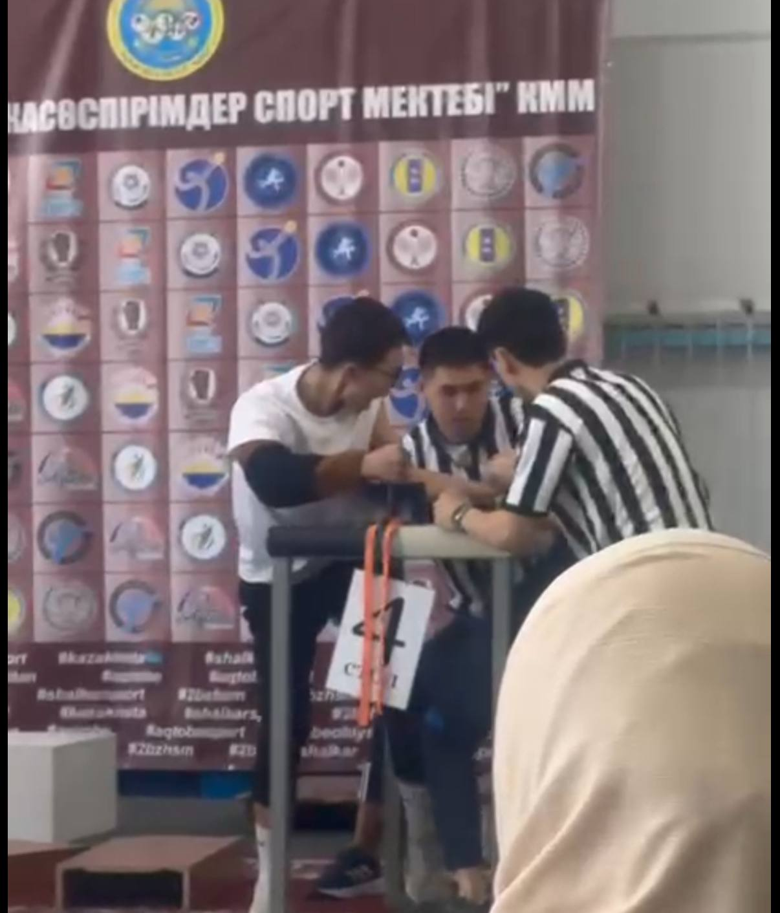
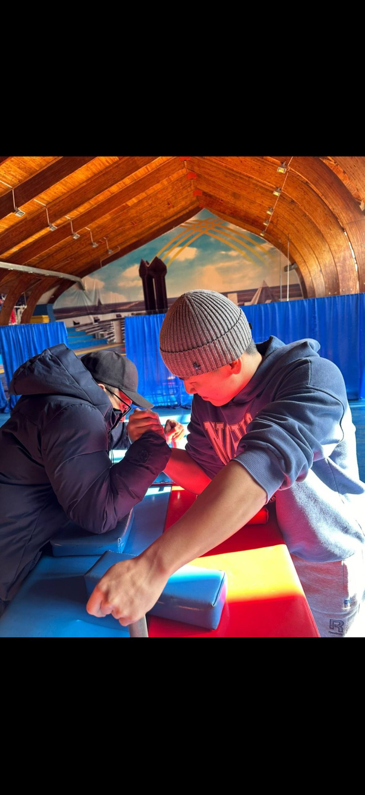

ABOUT ARM CLUB
MORE THAN JUST
ARM WRESTLING
Kazaly Arm Club is a student community created for people who are interested in arm wrestling, strength training and personal development. Our goal is to help students improve their technique, build confidence and develop discipline through regular training and teamwork.
Our Goals
- Improve strength and endurance
- Learn proper arm wrestling techniques
- Develop discipline and confidence
- Create a strong student community
- Prepare members for competitions
Who We Are
We are a student arm wrestling club where beginners and experienced students can train together, learn proper techniques and support each other.
KAZALY ARM CLUB
Our Athletes

Magzhan Assankhan
Magzhan Assankhan is an 18-year-old arm wrestler from Kazaly District. He became the Kazaly District Champion in 2023 and 2024. In 2024, he also became the Kyzylorda Region Champion and won a bronze medal at the Kazakhstan National Championship.

Aibek Baimakhan
Aibek Baimakhan is an 18-year-old arm wrestler from Shymkent. He is a Shymkent City Champion and has participated in various arm wrestling competitions. He continues to improve his strength, technique and experience in the sport.